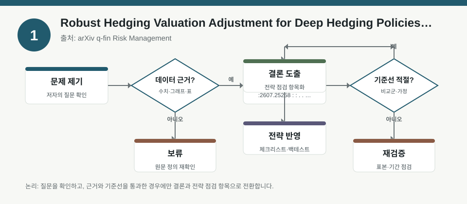
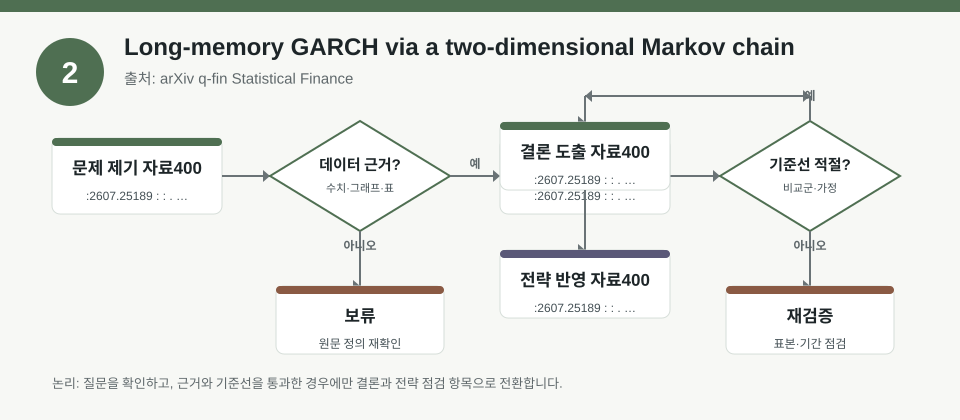
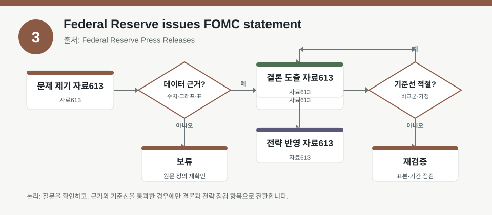

핵심 요약
- 결론: 이번 자료들은 “수익률 예측”보다 “리스크 측정·헤지 비용·변동성 상태”를 먼저 점검해야 한다는 점을 공통으로 보여줍니다.
- 원칙: 수치 해석은 원문 메타데이터에 근거하고, 숫자가 없으면 한국 투자자가 확인해야 할 항목으로만 표기합니다.
주목할 자료
| 번호 | 자료 | 출처 | 원문 | 핵심 내용 | 데이터 포인트 | 리스크/한계 |
|---|---|---|---|---|---|---|
| 1 | Robust Hedging Valuation Adjustment for Deep Hedging Policies under Market Frictions | arXiv q-fin Risk Management | 원문 보기 | 거래비용·시장 마찰이 있는 헤지에서 정책 성능과 실제 운용 가능 비용을 분리해 봐야 한다는 점을 다룹니다. | 딥헤지 정책의 실행비용, 거래마찰, 헤지 가치조정 개념을 확인할 필요가 있습니다. | 메타데이터만으로는 거래비용 추정식·데이터 기간·실거래 제약을 검증할 수 없습니다. |
| 2 | Long-memory GARCH via a two-dimensional Markov chain | arXiv q-fin Statistical Finance | 원문 보기 | 장기기억형 변동성 모형에서 과거 충격의 감쇠가 상태에 따라 달라질 수 있음을 제시합니다. | 변동성 상태전이, 장기기억, 확률적 안정성 조건을 확인할 필요가 있습니다. | 메타데이터만으로는 표본 구간·추정오차·예측 우위가 제시되지 않았습니다. |
| 3 | Federal Reserve issues FOMC statement | Federal Reserve Press Releases | 원문 보기 | 연준 통화정책 성명은 금리·유동성·달러·위험자산의 민감도를 다시 점검하게 만드는 핵심 이벤트입니다. | FOMC 문구, 정책금리 신호, 인플레이션·고용 평가를 확인할 필요가 있습니다. | 메타데이터에는 성명 세부 문구가 없어 직접적인 방향성 해석은 보류해야 합니다. |
자료별 상세
1. Robust Hedging Valuation Adjustment for Deep Hedging Policies under Market Frictions

- 핵심: 딥헤지 정책은 “예측 정확도”와 “실행 가능한 헤지 비용”을 함께 봐야 한다는 점을 강조합니다.
- 데이터 포인트: 거래비용, 시장 마찰, 정책 운용비용을 포트폴리오 레벨에서 재평가하는 관점이 필요합니다.
- 리스크: 메타데이터만으로는 어떤 마찰 가정, 어떤 자산군, 어떤 거래빈도에서 결과가 나왔는지 확인할 수 없습니다.
- 투자전략 반영 예시: 한국 투자자는 KOSPI/KOSDAQ에서 거래회전이 높은 섹터를 볼 때 슬리피지·수수료·호가공백을 체크리스트에 넣어야 합니다.
- 실행 예시: 백테스트 기록에 “총수익률”과 함께 “거래비용 차감 후 수익률, 회전율, 최대 체결비용”을 별도 칸으로 저장합니다.
2. Long-memory GARCH via a two-dimensional Markov chain

- 핵심: 변동성이 한 번 커진 뒤 얼마나 오래 남는지는 시장 상태에 따라 달라질 수 있으므로, 단순 평균회귀 가정보다 상태의존성을 봐야 합니다.
- 데이터 포인트: 장기기억형 변동성, 상태전이, 안정성 조건은 리스크 예산과 포지션 크기 결정의 입력값이 됩니다.
- 리스크: 메타데이터에는 실증 성과, 비교모형, 예측 구간이 없어 실제 KOSPI/KOSDAQ 적용 가능성은 검증이 필요합니다.
- 투자전략 반영 예시: 한국 투자자는 금리 급변기, 환율 급등기, 실적 시즌처럼 변동성 레짐이 바뀌는 구간을 따로 분리해 점검할 수 있습니다.
- 실행 예시: 동일 종목군에 대해 “저변동성 구간”과 “고변동성 구간”으로 나눠 손절·비중·현금비중 규칙이 어떻게 달라지는지 기록합니다.
3. Federal Reserve issues FOMC statement

- 핵심: FOMC 성명은 미국 금리 경로 기대를 통해 한국 주식의 밸류에이션, 달러 민감도, 외국인 수급 점검에 직접 연결됩니다.
- 데이터 포인트: 금리, 인플레이션, 고용, 유동성 신호를 KOSPI 대형주와 KOSDAQ 성장주의 민감도 관점에서 분리해 봐야 합니다.
- 리스크: 현재 메타데이터에는 성명 문구와 수치가 없어 완화·긴축 여부를 단정할 수 없습니다.
- 투자전략 반영 예시: 한국 투자자는 환율 민감 업종, 차입비중이 큰 섹터, 성장주와 경기민감주의 금리 민감도를 별도 체크해야 합니다.
- 실행 예시: 발표 직후 체크리스트에 “미국 2년물 금리 방향, 달러 강세 여부, 코스피 외국인 순매수 흐름”을 추가합니다.
팩터·리스크·포트폴리오 관점
- 핵심: 세 자료 모두 팩터 수익률 자체보다 변동성, 거래비용, 금리·달러 환경이 포트폴리오 성과를 좌우할 수 있다는 점을 시사합니다.
- 검수: 실제 운용 전에는 표본 구간, 비용 가정, 레짐 구분, 정책 문구 해석을 원문에서 반드시 확인해야 합니다.
정리
- 결론: 한국 투자자는 종목 방향성보다도 팩터 노출, 비용 구조, 금리·환율 민감도를 먼저 점검하는 편이 더 일관된 해석에 가깝습니다.
- 다음 확인: 원문에서 거래비용 산식, 변동성 상태 정의, FOMC 문구의 핵심 표현을 확인한 뒤 자체 체크리스트에 반영해야 합니다.